&
Scanner avec l'application Numériseur de documents (Simple-scan) : Simple-scan
Nota : L'application pour scanner XSane est installée par défaut.
sane-project puis le
Paquet/Xsane
L'utilisation de l'application Xsane ne sera pas vue dans ce MEMO.
Simple-scan est une application simple d'utilisation, conçue pour permettre aux utilisateurs de connecter
leur scanner et d'obtenir rapidement l'image/document dans un format approprié.
Simple-scan est d'une manière générale une interface à SANE - qui est le même programme de base que celui utilisé par XSANE. Cela implique que
les scanners existants fonctionneront et que l'interface a été largement testée.
Installer le paquet suivant :
Pour l'installation des paquets se reporter au chapitre : Ajout d'une application ou de paquets
Liste des scanners supportés par le projet SANE
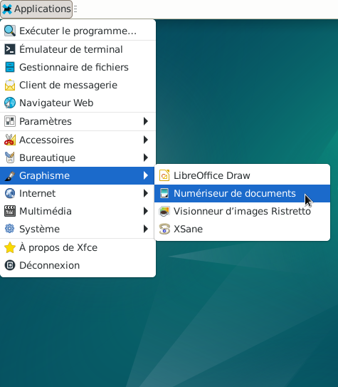
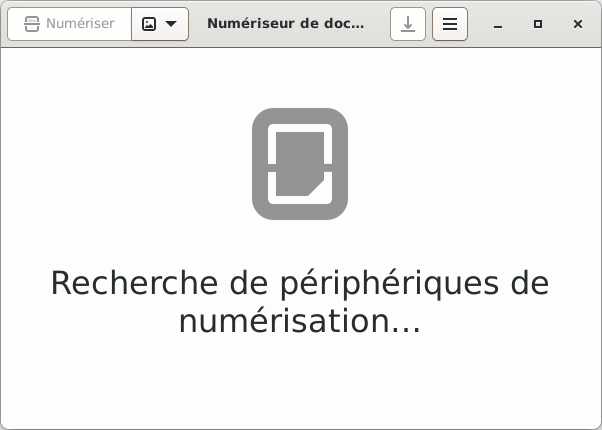

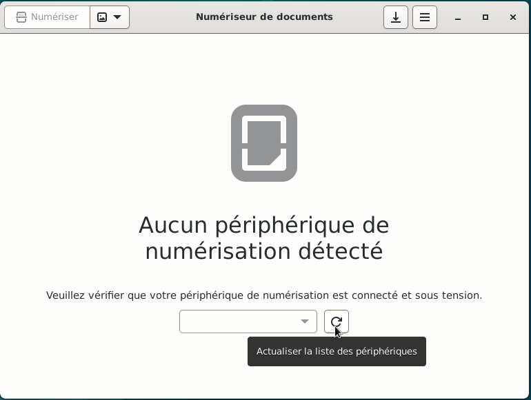
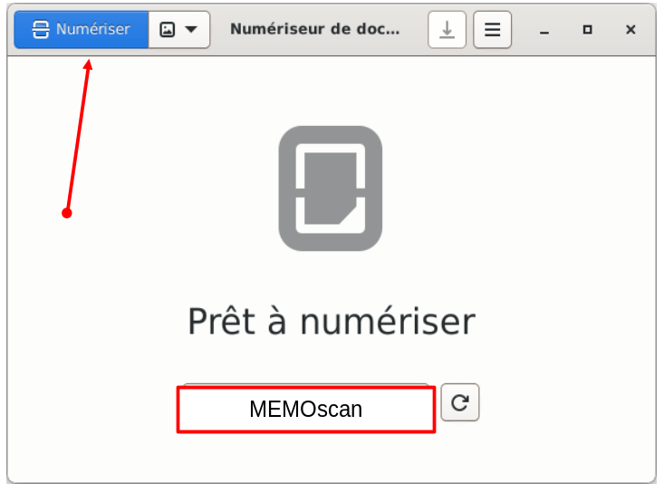
Nota : Sélectionner une page pour modification :
Positionner le pointeur de la souris sur la page
simple clic sur cette page, elle doit être encadré en bleu.
Si la page est encadrée en noir, elle n'est pas sélectionnée.
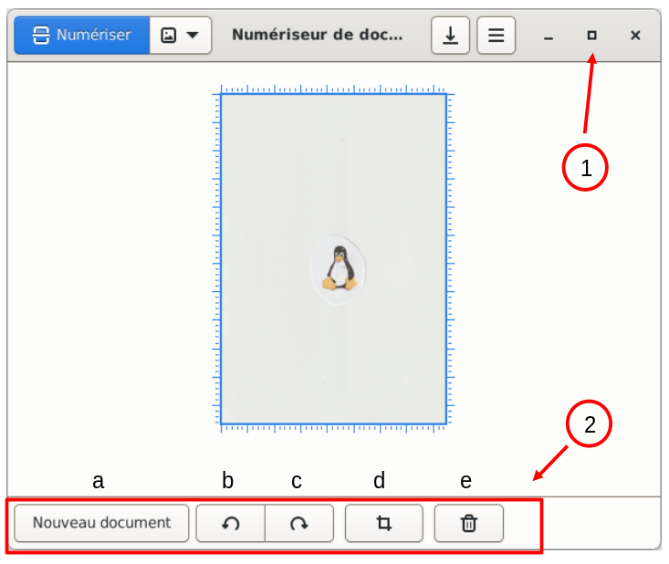
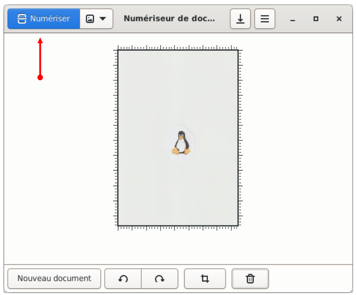
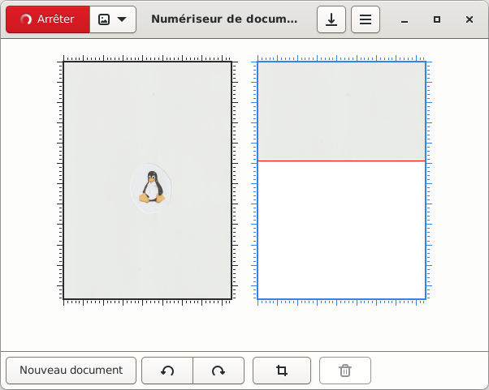
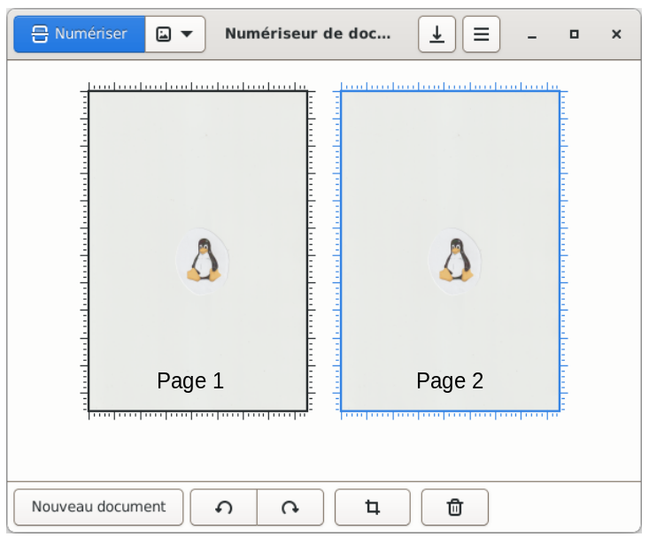
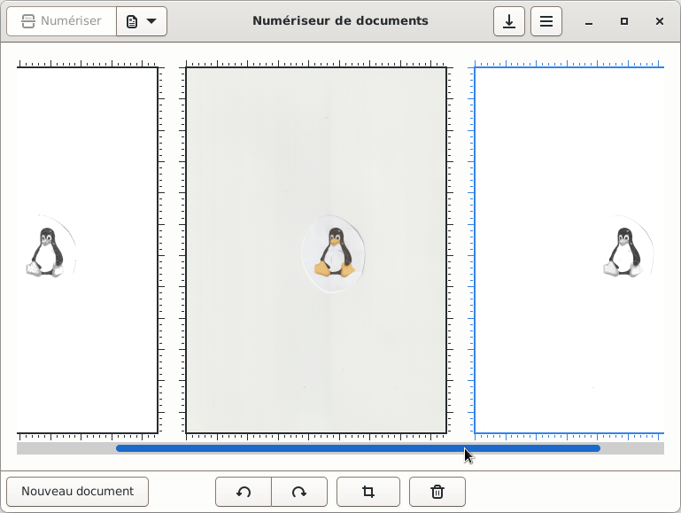
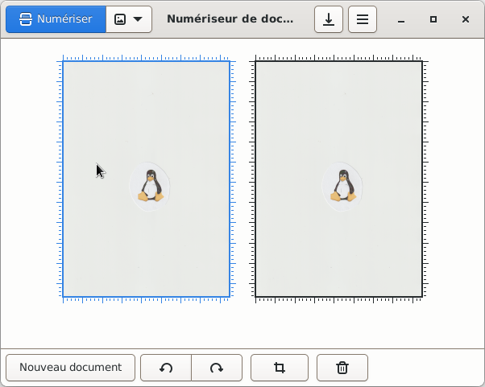
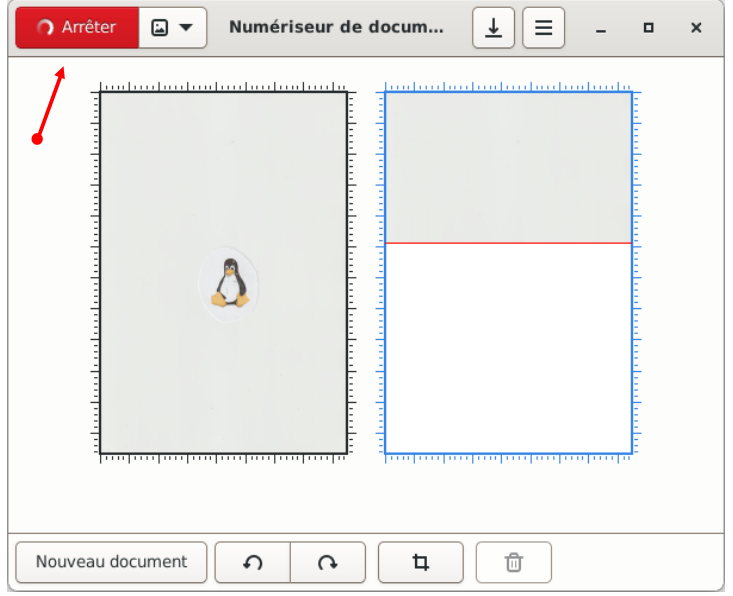
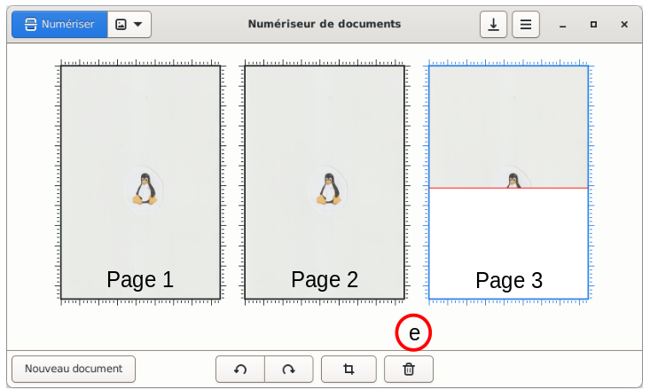
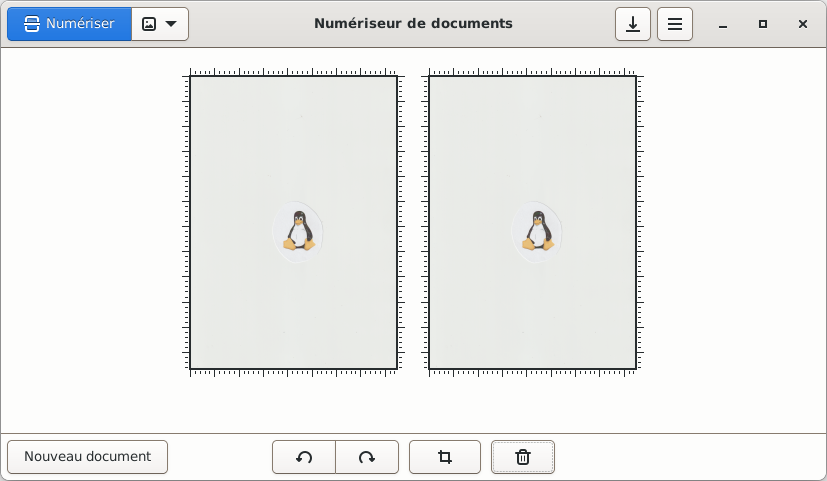
Si besoin, se rendre au chapitre Scanner : Enregistrer le ou les document(s) numérisé(s).

Informations sur le logiciel libre et Merci.
Marques déposées :
Ce site ne fait pas partie de Debian, n'est pas produit par le projet
Debian, ni approuvé par le projet Debian.
Ce site n'est pas affilié à Debian. Debian est une marque déposée appartenant
à Software in the Public Interest, Inc.
Contribuer :
Ce site ne fait pas partie de XFCE, n'est pas produit par le projet
XFCE, ni approuvé par le projet XFCE.
Ce site n'est pas affilié à XFCE.
Ce site est juste réalisé par un passionné.